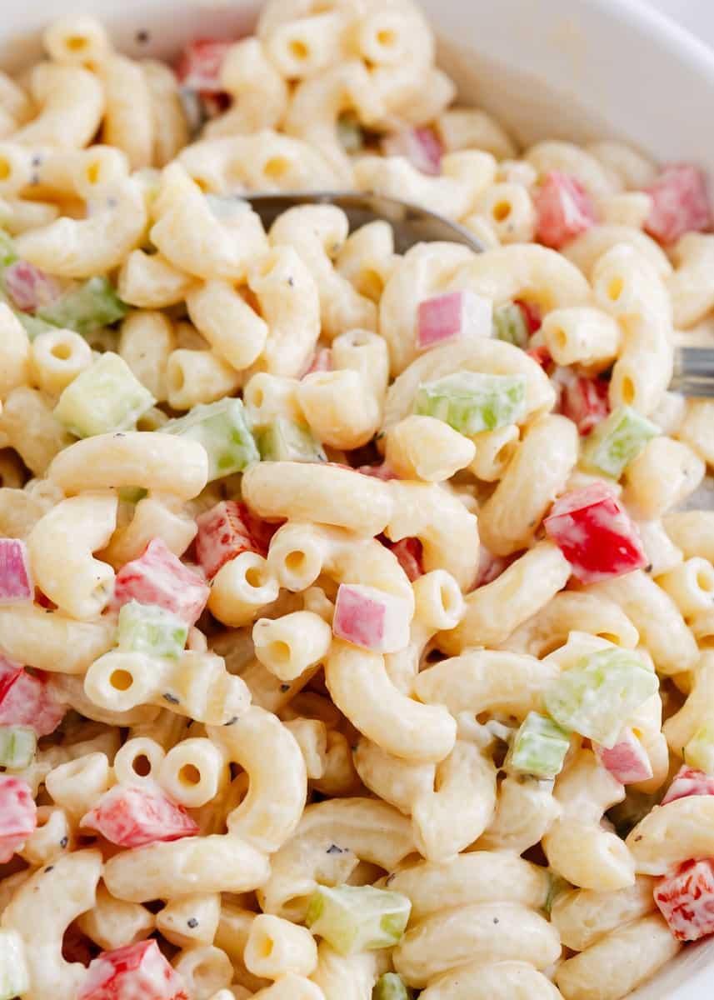

Macaroni

Macaroni is a versatile pasta that can be used in various dishes. It is a popular choice for macaroni and cheese, a classic comfort food where the pasta is typically coated in a creamy cheese sauce.
Ingredients:
- 8 ounces elbow macaroni
- 2 tablespoons butter
- 2 tablespoons all-purpose flour
- 1 cup milk
- 1 cup shredded cheddar cheese
- 1/2 teaspoon salt
- 1/4 teaspoon black pepper
- 1/4 teaspoon garlic powder
- 1/4 teaspoon paprika
Instructions:
- Cook macaroni according to package instructions; drain and set aside.
- In a large saucepan, melt butter over medium heat.
- Stir in flour until smooth and cook for 1-2 minutes, stirring constantly.
- Gradually whisk in milk until smooth and thickened.
- Stir in shredded cheddar cheese until melted and smooth.
- Season with salt, pepper, garlic powder, and paprika.
- Add cooked macaroni to the cheese sauce and stir until well coated.
- Serve hot as a side dish or main course.